Installation¶
Pre-requis¶
Avant de vous lancer dans l’installation d’Abeille, vérifiez que vous avez un Système qui est dans le cadre de ce developpement.
Une fois l’installation faite, il est nécessaire de vérifier la configuration du plugin et de l’adapter à votre situation, pour se faire il est nécessaire de faire le Parametrage des équipements du plugin.
Quand tout est en place, vous allez ajouter des équipements. Afin d’avoir une interface graphique jolie dans Jeedom vous pouvez adapter les Widget qui seront utilisés. C’est optionel. C’est juste pour faire beau.
Installation de la version « stable »¶
L’installation standard du plugin se fait directement depuis le market (Plugins > Gestion des plugins > Market)
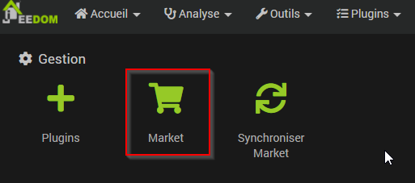Dans la partie « Rechercher » entrez « Abeille »
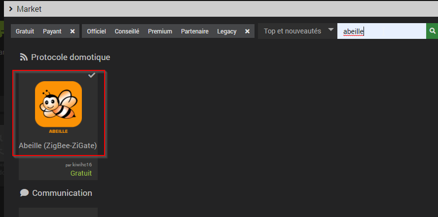Et enfin lancez l’installation via le bouton « Installer stable »
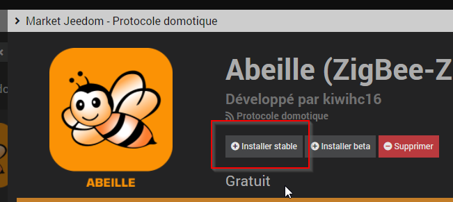Une fois installé passez à l’activation du plugin.
Installation de la version « beta »¶
L’installation de cette version « non stable » n’est pas recommandée. Elle ne devrait être faite qu’en accord avec les developpeurs pour par exemple vérifier un correctif en avance de phase.
La procédure est la même que ci dessus en cliquant sur « installer beta » mais si ce dernier bouton n’est pas disponible, il vous faut vous connecter sur le market Jeedom, puis activer cette possibilité via votre « profil ».
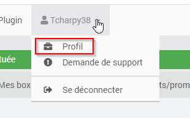et
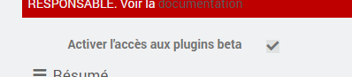Activation du plugin¶
Cette étape est independante de la methode d’installation du plugin (market, GitHub, direct Git repo) . Via la page de configuration du plugin, la première chose à faire est l’activer comme suit:
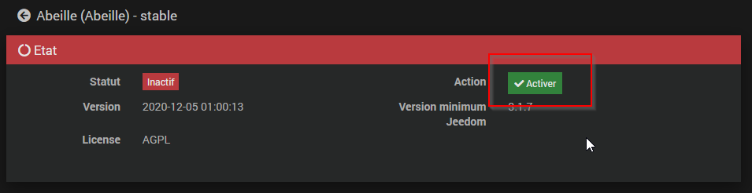Lancer l’installation des dépendances
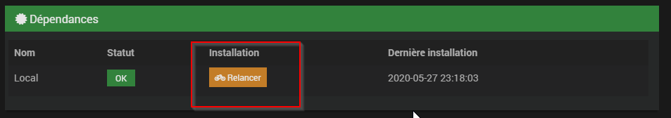Enfin activer la gestion automatique des démons et les lancer.
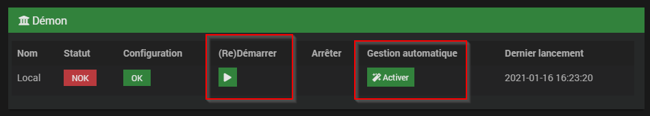Configuration d’une ou plusieurs zigates¶
“Abeille” supporte est dédié à la passerelle « Zigate » sous toutes ses formes (USB, Wifi, PIN ou DIN). Via la page de configuration il faut indiquer à Abeille comment acceder à la zigate.
Etendre la zone « Zigates »
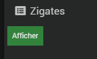Et configurez le port d’accès à la zigate.
Indiquez son type
Si type USB, PI ou DIN, indiquez sur quel port serie Abeille pourra communiquer avec la zigate. Si du type Wifi, il faudra remplir l’adresse IP.
Testez la communication. Le status OK, avec la version de firmware, devrait apparaitre en 4. Cette partie ne supporte pas le type Wifi actuellement.
Activez la zigate.
Sauvegardez. Ne pas oublier cette étape.
Information complémentaires PiZigate: Installation PiZiGate.
Mise a jour du plugin¶
Market¶
Mise à jour à partir du market Rien de particulier, suivre la méthode de base de Jeedom
Github¶
Mise à jour à partir de github
1cd /var/www/html/plugins/Abeille
2sudo git pull https://github.com/KiwiHC16/Abeille
Installation avancée¶
L’installation par défaut passe par le « market » Jeedom. C’est le mode le plus simple. Néanmoins pour des besoins d’accès à une version de developpement par exemple il peut être nécessaire d’installer le plugin par un autre biais.
Via Jeedom à partir de GitHub¶
Commencer par autoriser l’accès à GitHub via la config Jeedom.
Réglages-> Système -> Configuration
Selectionner l’onglet « Mise à jour/market », puis « GitHub » dans la partie « Configuration des dépots »
Activez GitHub
- et « Sauvegarder ».
- 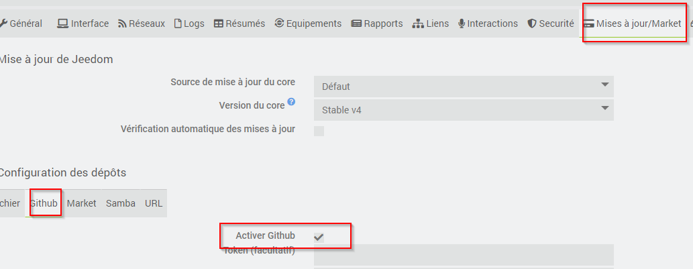
A partir de la il est possible d’installer n’importe quel plugin à partir de « GitHub ».
Aller sur « Plugins » puis « Gestion des plugins ».
- Pour ajouter un plugin depuis GitHub et non pas du market, cliquer sur « Plugins (+) »
- 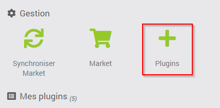
- Dans « Type de source », sélectionner Github puis entrez les informations suivantes
ID logique du plugin: Abeille
Utilisateur ou organisateur: KiwiHC16
Nom du dépôt: Abeille
Branche: master (ou le nom de la branche depuis laquelle vous devez recupérer le plugin, ex: beta)
Cliquer sur Enregistrer.
Via SSH et un fichier Zip¶
1cd /var/www/html/plugins/
2mkdir Abeille
3cd Abeille
4unzip le fichier téléchargé de GitHub dans le répertoire
5cd ..
Puis appliquer les bons droits :
1chmod -R 777 /var/www/html/plugins/Abeille
2chown -R www-data:www-data /var/www/html/plugins/Abeille
Via Git¶
Directement avec git (Le plus simple et le plus rapide)
1cd /var/www/html/plugins/
2git clone https://github.com/KiwiHC16/Abeille.git Abeille
Puis appliquer les bons droits :
1chmod -R 777 /var/www/html/plugins/Abeille
2chown -R www-data:www-data /var/www/html/plugins/Abeille
Ancienne doc¶
Etape 1: Zigate¶
La Zigate peut être connectée au port USB, par module Wifi ou sur le port GPIO d’un Raspberry Pi.
Pour les utilisateurs très avertis, il existe des Solutions Multiples et Distantes plus complexes qui amène de la flexibilité que j’utilise personaellement.
Pour la PiZiGate, des étapes spécifiques sont nécessaires, Installation PiZiGate.
Le firmware supporté est le dernier publié avec un petit décalage le temps d’adapter Abeille dans cet entretemps c’est l’avant derniere version qui est supportée. Pour mettre a jour le Installation Firmware.
Etape 2: Widget¶
L’installation de Widget est une option permettant d’avoir un visuel plus joli.
Attention
Sur les dernières versions de Jeedom, il y a des problèmes de rafraichissement de widget.
Vous pouvez installer quelques widgets (officiels) pour que le rendu soit plus sympa
baromètre pour le capteur Xiaomi Carré (dashboard.info.numeric.barometre )
thermomètre pour les capteurs Xiaomi ronds et carrés (dashboard.info.numeric.tempIMG)
humidité pour les capteurs Xiaomi ronds et carrés (dashboard.info.numeric.hydro3IMG)

Etape 3: Référence¶
Créer un objet Jeedom pour retrouver rapidement et facilement les nouveaux équipements.


Tous les nouveaux équipements seront attachés à cet objet.
Bidouilles¶
Pour écraser des « bidouilles » locales :
1cd /var/www/html/plugins/Abeille
2sudo git reset --hard HEAD
3sudo git pull https://github.com/KiwiHC16/Abeille